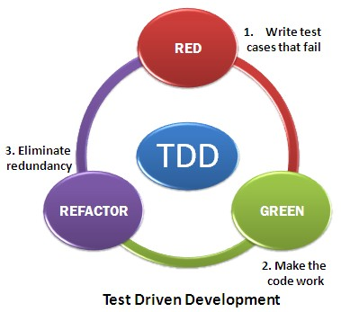

Well. Time to learn about Test Driven Development. It's funny becuase we've been doing this for most of our Ruby and some of our Javascript challenges already. It's the rspec files that we've seen and it's also been the bottom half of our Javascript files as well.
Test Driven Development hasn't always been around, it's defined as an evolutionary style of development that relies on a short loop of development, repeated over and over until the project is finished. Essentially - the developer just writes a short 'test' that will initially fail (something like - describe 'method' to be type_of? Method). In order for this test to pass, the developer will need to define a method, called method. Then in the test file, they'll write a little test that gives a certain input and describes what the output should be. Next they goes back to their code file to try to write a block of code that will give them this desired output. Once that test passes, they'll continue the process with the next test for an upgraded feature.
Here I've included a little circlular flow chart to show you just how this works.
